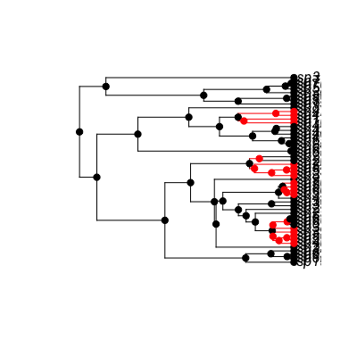

make.bisseness(tree, states, unresolved=NULL, sampling.f=NULL, nt.extra=10, strict=TRUE, control=list())
ape “phylo” format.NA if the state is unknown. This vector must have
names that correspond to the tip labels in the phylogenetic tree
(tree$tip.label). For tips
corresponding to unresolved clades, the state should be NA.c(0.5, 0.75) means that half of species in state 0
and three quarters of species in state 1 are included in the
phylogeny. By default all species are assumed to be known.make.bisse.states vector is always checked to make sure
that the values are 0 and 1 only. If strict is TRUE
(the default), then the additional check is made that every
state is present at least once in the tree. The likelihood models
tend to be poorly behaved where a state is not represented on the
tree.Prepare to run BiSSE-ness (Binary State Speciation and Extinction (Node Enhanced State Shift)) on a phylogenetic tree and character distribution. This function creates a likelihood function that can be used in maximum likelihood or Bayesian inference.
make.bisse returns a function of class bisse. This
function has argument list (and default values) [RICH: Update to BiSSEness?]
f(pars, condition.surv=TRUE, root=ROOT.OBS, root.p=NULL,
intermediates=FALSE)
The arguments are interpreted as
pars A vector of 10 parameters, in the order
lambda0, lambda1, mu0, mu1,
q01, q10, p0c, p0a, p1c, p1a.
condition.surv (logical): should the likelihood
calculation condition on survival of two lineages and the speciation
event subtending them? This is done by default, following Nee et
al. 1994. For BiSSE-ness, equation (A5) in Magnuson-Ford and Otto
describes how conditioning on survival alters the likelihood of
observing the data.
root: Behaviour at the root (see Maddison et al. 2007,
FitzJohn et al. 2009). The possible options are
ROOT.FLAT: A flat prior, weighting
D0 and D1 equally.
ROOT.EQUI: Use the equilibrium distribution
of the model, as described in Maddison et al. (2007) using
equation (A6) in Magnuson-Ford and Otto.
ROOT.OBS: Weight D0 and
D1 by their relative probability of observing the
data, following FitzJohn et al. 2009:
D = D0 * D0/(D0 + D1) + D1 * D1/(D0 + D1)
ROOT.GIVEN: Root will be in state 0
with probability root.p[1], and in state 1 with
probability root.p[2].
ROOT.BOTH: Don't do anything at the root,
and return both values. (Note that this will not give you a
likelihood!).
root.p: Root weightings for use when
root=ROOT.GIVEN. sum(root.p) should equal 1.
intermediates: Add intermediates to the returned value as
attributes:
cache: Cached tree traversal information.
intermediates: Mostly branch end information.
vals: Root D values.
At this point, you will have to poke about in the source for more information on these.
This must be a data.frame with at least the four columns
tip.label, giving the name of the tip to which the data
applies
Nc, giving the number of species in the clade
n0, n1, giving the number of species known to be
in state 0 and 1, respectively.
These columns may be in any order, and additional columns will be ignored. (Note that column names are case sensitive).
An alternative way of specifying unresolved clade information is to
use the function make.clade.tree to construct a tree
where tips that represent clades contain information about which
species are contained within the clades. With a clade.tree,
the unresolved object will be automatically constructed from
the state information in states. (In this case, states
must contain state information for the species contained within the
unresolved clades.)
FitzJohn R.G., Maddison W.P., and Otto S.P. 2009. Estimating trait-dependent speciation and extinction rates from incompletely resolved phylogenies. Syst. Biol. 58:595-611.
Maddison W.P., Midford P.E., and Otto S.P. 2007. Estimating a binary character's effect on speciation and extinction. Syst. Biol. 56:701-710.
Magnuson-Ford, K., and Otto, S.P. 2012. Linking the investigations of character evolution and species diversification. American Naturalist, in press.
Nee S., May R.M., and Harvey P.H. 1994. The reconstructed evolutionary process. Philos. Trans. R. Soc. Lond. B Biol. Sci. 344:305-311.
## First we simulat a 50 species tree, assuming cladogenetic shifts in ## the trait (i.e., the trait only changes at speciation). ## Red is state '1', black is state '0', and we let red lineages ## speciate at twice the rate of black lineages. ## The simulation starts in state 0. set.seed(3) pars <- c(0.1, 0.2, 0.03, 0.03, 0, 0, 0.1, 0, 0.1, 0) phy <- tree.bisseness(pars, max.taxa=50, x0=0) phy$tip.statesp8 sp9 sp13 sp16 sp17 sp19 sp21 sp24 sp25 sp26 sp27 sp29 sp30 sp31 sp34 sp35 0 0 0 1 1 0 0 1 0 0 0 0 0 0 0 0 sp36 sp37 sp38 sp39 sp40 sp41 sp42 sp43 sp44 sp45 sp46 sp47 sp50 sp51 sp52 sp53 0 1 1 1 0 1 1 0 0 0 1 0 1 1 0 1 sp54 sp55 sp56 sp57 sp58 sp59 sp60 sp61 sp62 sp63 sp64 sp65 sp66 sp67 sp68 sp69 1 0 0 1 1 1 1 0 0 0 0 0 0 0 0 0 sp70 sp71 0 0h <- history.from.sim.discrete(phy, 0:1) plot(h, phy)
## This builds the likelihood of the data according to BiSSEness: lik <- make.bisseness(phy, phy$tip.state) ## e.g., the likelihood of the true parameters is: lik(pars) # -174.7954[1] -174.7954## ML search: First we make hueristic guess at a starting point, based ## on the constant-rate birth-death model assuming anagenesis (uses ## \link{make.bd}). startp <- starting.point.bisse(phy) ## We then take the total amount of anagenetic change expected across ## the tree and assign half of this change to anagenesis and half to ## cladogenetic change at the nodes as a heuristic starting point: t <- branching.times(phy) tryq <- 1/2 * startp[["q01"]] * sum(t)/length(t) p <- c(startp[1:4], startp[5:6]/2, p0c=tryq, p0a=0.5, p1c=tryq, p1a=0.5) ## Start an ML search from this point. This takes some time (~12s), so ## is not run by default. ## <strong>Not run</strong>: # fit <- find.mle(lik, p, method="subplex") # logLik(fit) # -174.0104 # # ## Compare the fit to a constrained model that only allows the trait # ## to change along a lineage (anagenesis). This also takes some time # ## (~12s) # lik.no.clado <- constrain(lik, p0c ~ 0, p1c ~ 0) # fit.no.clado <- find.mle(lik.no.clado,p[argnames(lik.no.clado)]) # logLik(fit.no.clado) # -174.0577 # # ## This is consistent with what BiSSE finds: # likB <- make.bisse(phy, phy$tip.state) # fitB <- find.mle(likB, startp, method="subplex") # logLik(fitB) # -174.0576 # # ## With only this 50-species tree, there is no statistical support # ## for the more complicated BiSSE-ness model that allows cladogenesis: # anova(fit, no.clado=fit.no.clado) # ## Note that anova() performs a likelihood ratio test here. # # ## If the above is repeated with max.taxa=250, BiSSE-ness rejects the # ## constrained model in favor of one that allows cladogenetic change. # # ## MCMC run: We use the ML estimate from the full model # ## as a starting point. # ## # ## We shift all very small numbers up to 1e-4 to allow the derivatives # ## to be calculated. # ml.start.pt <- pmax(coef(fit), 1e-4) # # ## Make exponential priors for the rate parameters and uniform priors # ## for the cladogenetic change probability prarameters. # make.prior.exp_ness <- function(r, min=0, max=1) { # function(pars) { # sum(dexp(pars[1:6], rate=r, log=TRUE)) + # sum(dunif(pars[7:10], min, max, log=TRUE)) # } # } # # ## Choosing the slice sampling parameter, w (affects speed): # library(numDeriv) # hess <- hessian(lik, ml.start.pt) # vcv <- -solve(hess) # sehess <- sqrt(abs(diag(vcv))) # w <- 2 * pmin(sehess, .2) # # ## Setting the priors # r <- log(length(phy$tip.label))/max(branching.times(phy)) # prior <- make.prior.exp_ness(1/(2*r)) # prior(ml.start.pt) # # ## Running the mcmc chain (only 10 steps are shown for illustration) # steps <- 10 # set.seed(1) # For reproducibility # output <- mcmc(lik, ml.start.pt, nsteps=steps, w=w, prior=prior) # # ## Unresolved tip clade: Here we collapse one clade in the 50 species # ## tree (involving sister species sp70 and sp71) and illustrate the use # ## of BiSSEness with unresolved tip clades. # slimphy <- drop.tip(phy,c("sp71")) # states <- slimphy$tip.state[slimphy$tip.label] # states["sp70"] <- NA # unresolved <- data.frame(tip.label=c("sp70"), Nc=2, n0=2, n1=0) # # ## This builds the likelihood of the data according to BiSSEness: # lik.unresolved <- make.bisseness(slimphy, states, unresolved) # ## e.g., the likelihood of the true parameters is: # lik.unresolved(pars) # -174.6575 # # ## ML search from the heuristic starting point used above: # fit.unresolved <- find.mle(lik.unresolved, p, method="subplex") # logLik(fit.unresolved) # -173.9136 # ## <strong>End(Not run)</strong>
make.bisse for the model with no state change at nodes.
tree.bisseness for simulating trees under the BiSSE-ness
model.
constrain for making submodels, find.mle
for ML parameter estimation, mcmc for MCMC integration,
and make.bd for state-independent birth-death models.
The help pages for find.mle has further examples of ML
searches on full and constrained BiSSE models.